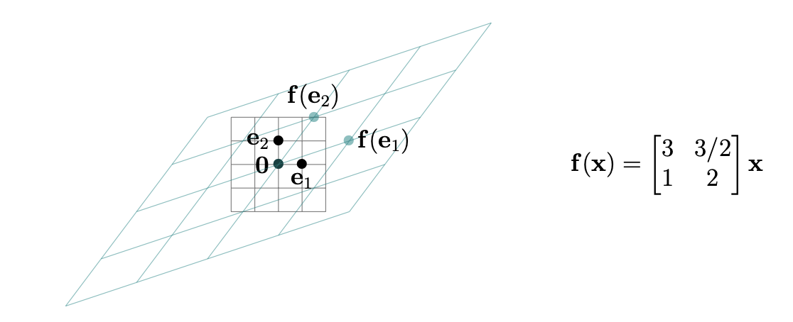

Linear functions, matrices, and the derivative matrix
The linear approximation to a vector-valued function
For a function of a single variable \(f : \mathbb{R} \to \mathbb{R}\) that is differentiable at \(a\), a small change \(h\) in the input produces an approximate change of \(f'(a)\,h\) in the output (see Single-variable derivative review):
or equivalently, writing \(x = a + h\) so that \(h = x - a\),
For \(f : \mathbb{R}^n \to \mathbb{R}\) the single number \(f'(a)\) is replaced by the gradient \((\nabla f)(\mathbf{a})\), the column vector of partial derivatives evaluated at \(\mathbf{a}\) (see The Gradient):
and the product \(f'(a)\,h\) is replaced by a dot product. The linear approximation to \(f\) at \(\mathbf{a}\) (see The linear approximation for a scalar-valued function) is
Written out for \(n = 2\), with \(\mathbf{a} = (a,b)\) and \(\mathbf{x} = (x,y)\), this is
Suppose that \(\mathbf{f} : \mathbb{R}^n \to \mathbb{R}^m\) is a vector-valued function, with component functions \(f_1, f_2, \ldots, f_m\):
For an \(n\)-vector \(\mathbf{a}\), how can we approximate the \(m\)-vector \(\mathbf{f}(\mathbf{x})\) when \(\mathbf{x}\) is near \(\mathbf{a}\)?
There is an obvious thing to try, and it needs no new machinery. Each component function \(f_i : \mathbb{R}^n \to \mathbb{R}\) is scalar-valued, and we know how to linearly approximate one of those: \(f_i(\mathbf{x}) \approx f_i(\mathbf{a}) + (\nabla f_i)(\mathbf{a}) \cdot (\mathbf{x} - \mathbf{a})\). So approximate each of the \(m\) components separately, then stack the \(m\) results back up into a column. To make things easier to imagine, suppose \(m = n = 3\). Let's consider a specific example.
Example: Define \(g : \mathbb{R}^3 \to \mathbb{R}^3\) by
and let \(\mathbf{a} = (2, 1, 0)\). The respective component functions are
each a scalar-valued function \(\mathbb{R}^3 \to \mathbb{R}\). Their gradients are
so that at \(\mathbf{a} = (2,1,0)\) we get \(g_1(\mathbf{a}) = 1\), \(g_2(\mathbf{a}) = 8\), \(g_3(\mathbf{a}) = 3\) and
Hence if \((x, y, z)\) is near \(\mathbf{a}\) then we have
Putting these scalar approximations together yields a vector approximation
More generally, still with \(m = n = 3\), we want to approximate the vector
for \((x, y, z)\) near a point \((a, b, c)\), for any scalar-valued functions \(f_1, f_2, f_3\). We have
so combining these for \(f_1\), \(f_2\), and \(f_3\) yields
Alas, the right side of this last approximation is horrifying. We need a more compact and efficient way to work with it. The way to handle it is provided by the language of matrices, to which we now turn.
Linear and affine functions
Definition: A scalar-valued function \(f : \mathbb{R}^n \to \mathbb{R}\) is called
- affine if it has the form \(f(x_1, \ldots, x_n) = a_1x_1 + a_2x_2 + \cdots + a_nx_n + b\) for some numbers \(a_1, \ldots, a_n, b\) (so \(b = f(\mathbf{0})\)).
- linear if it has the form \(f(x_1, \ldots, x_n) = a_1x_1 + a_2x_2 + \cdots + a_nx_n\) for some numbers \(a_1, \ldots, a_n\); i.e., it is affine with \(b = 0\), or equivalently with \(f(\mathbf{0}) = 0\).
A vector-valued function \(\mathbf{f} : \mathbb{R}^n \to \mathbb{R}^m\) (so \(\mathbf{f}(\mathbf{x}) = (f_1(\mathbf{x}), \ldots, f_m(\mathbf{x}))\)) is called
- affine if each of its component functions \(f_i : \mathbb{R}^n \to \mathbb{R}\) is affine.
- linear if each of its component functions \(f_i : \mathbb{R}^n \to \mathbb{R}\) is linear.
Example: The function
from \(\mathbb{R}^3\) to \(\mathbb{R}^3\) is affine. The function
from \(\mathbb{R}^3\) to \(\mathbb{R}^3\) is linear, and
is neither affine nor linear (due to \(z^2\) in the third component function \(h_3 = y + x + z^2\)).
Matrices: a shorthand for linear functions
Definition: An \(m \times n\) matrix is a rectangular array \(A\) of numbers presented like this:
The collection of entries \(\begin{pmatrix} a_{i,1} & a_{i,2} & \cdots & a_{i,n} \end{pmatrix}\) along the \(i\)th horizontal layer (with \(i = 1\) along the top side) is called the \(i\)th row, and the collection of entries
along the \(j\)th vertical layer (with \(j = 1\) along the left side) is called the \(j\)th column.
The entry at the crossing of the \(i\)th row from the top and \(j\)th column from the left is denoted \(a_{ij}\) (or sometimes \(a_{i,j}\)); it is called the \(ij\)-entry or \((i,j)\)-entry.
Definition: If \(A\) is an \(m \times n\) matrix, and \(\mathbf{x} \in \mathbb{R}^n\), the matrix-vector product \(A\mathbf{x} \in \mathbb{R}^m\) is defined as
In other words, if we write \(\mathbf{r}_1, \ldots, \mathbf{r}_m\) for the rows of \(A\) (so these are \(n\)-vectors), then
Warning
If \(A\) is an \(m \times n\) matrix and \(\mathbf{x}\) is a \(d\)-vector with \(d \neq n\) then the matrix-vector product \(A\mathbf{x}\) is not defined.
Example: We saw earlier that the function
from \(\mathbb{R}^3\) to \(\mathbb{R}^3\) is linear. Let us find the matrix that represents it. Write each component function as a combination of \(x\), \(y\), \(z\) in that order:
The \(i\)th row of the matrix is the list of coefficients of the \(i\)th component function, so
Checking against the row description \(A\mathbf{x} = (\mathbf{r}_1 \cdot \mathbf{x},\, \mathbf{r}_2 \cdot \mathbf{x},\, \mathbf{r}_3 \cdot \mathbf{x})\) with \(\mathbf{x} = (x, y, z)\):
as desired. Note that \(a_{22} = 0\) because \(y\) is absent from the second component function, and \(a_{33} = 0\) because \(z\) is absent from the third.
Definition: A function \(\mathbf{f} : \mathbb{R}^n \to \mathbb{R}^m\) is linear precisely when \(\mathbf{f}(\mathbf{x}) = A\mathbf{x}\) for an \(m \times n\) matrix \(A\). This just rephrases the definition of "linear function". In this way, an \(m \times n\) matrix \(A\) is a shorthand way of encoding a linear function from \(\mathbb{R}^n\) to \(\mathbb{R}^m\).
We can also use matrices to give a shorthand for affine functions.
Example: The affine function
from the earlier example can be expressed as
Note
Much as inspection of definitions showed that linear functions \(\mathbb{R}^n \to \mathbb{R}^m\) are exactly those of the form \(\mathbf{f}(\mathbf{x}) = A\mathbf{x}\) for an \(m \times n\) matrix \(A\), affine functions \(\mathbf{f} : \mathbb{R}^n \to \mathbb{R}^m\) are exactly those of the form \(\mathbf{f}(\mathbf{x}) = A\mathbf{x} + \mathbf{b}\), where \(A\) is an \(m \times n\) matrix and \(\mathbf{b} \in \mathbb{R}^m\) is a vector.
Further viewpoints on matrix-vector products
Theorem
If \(\mathbf{c}_1, \mathbf{c}_2, \ldots, \mathbf{c}_n\) are the columns of \(A\) (so viewed as vectors in \(\mathbb{R}^m\)), which is to say
then
In particular, the matrix-vector product is a specific linear combination of the columns of the matrix.
Example: For \(g : \mathbb{R}^3 \to \mathbb{R}^3\), if we separate the contributions of \(x\), \(y\), and \(z\) in its definition we get
On the right side, we are forming linear combinations of vectors using \(x\), \(y\), \(z\) as the coefficients, and the vectors in this linear combination are exactly the columns of the \(3 \times 3\) matrix
We introduce the following useful shorthand:
Theorem
For a linear function \(\mathbf{f}(\mathbf{x}) = A\mathbf{x}\), the matrix \(A\) has as its respective columns \(\mathbf{f}(\mathbf{e}_1), \mathbf{f}(\mathbf{e}_2), \ldots, \mathbf{f}(\mathbf{e}_n)\), where \(\mathbf{e}_1, \mathbf{e}_2, \ldots, \mathbf{e}_n\) are the coordinate vectors.
Example: The figure below shows the effect of \(f\) acting on the usual 2-dimensional unit square grid centered at the origin.
